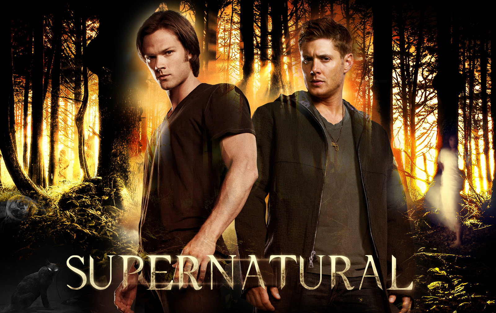
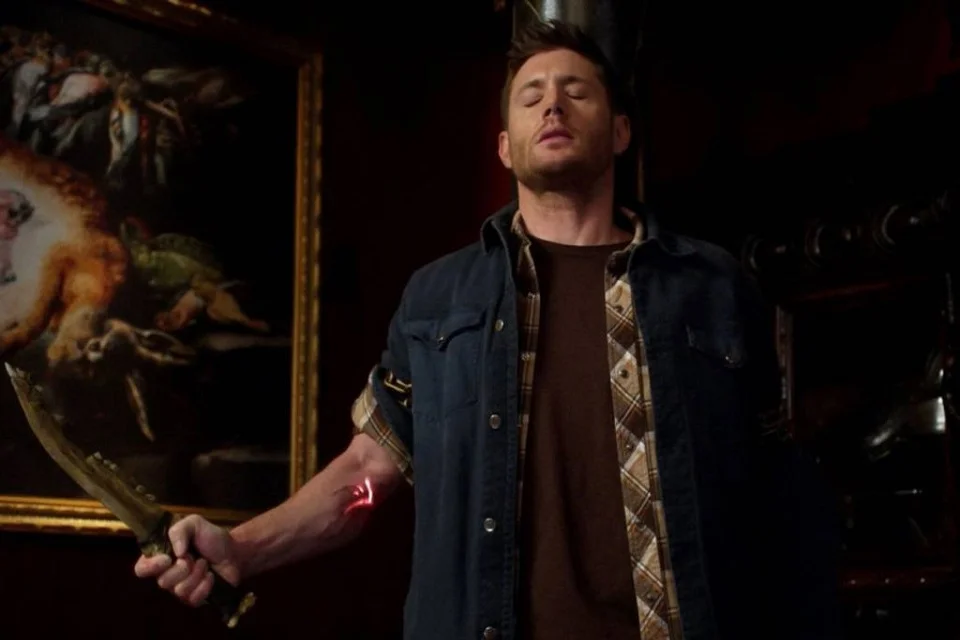
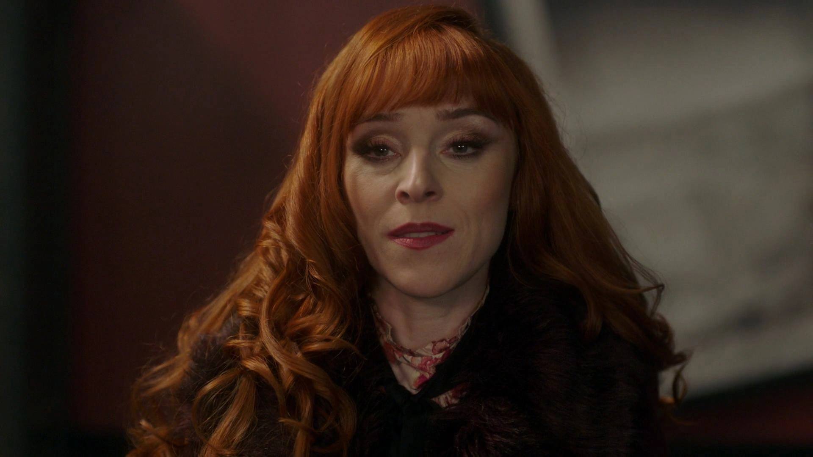
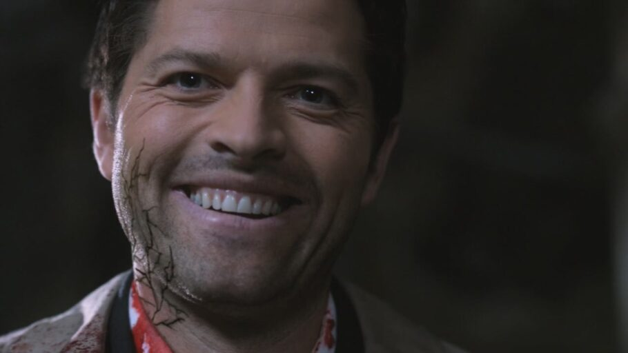
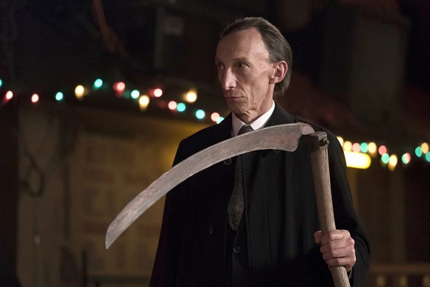
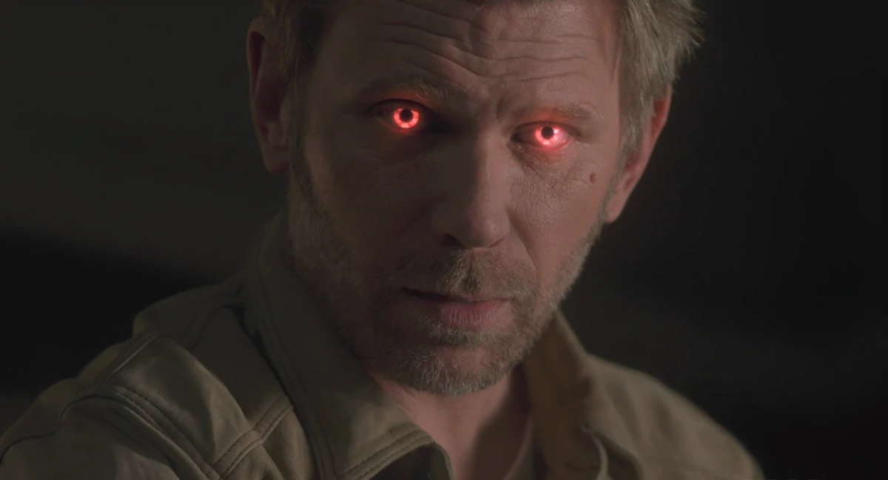
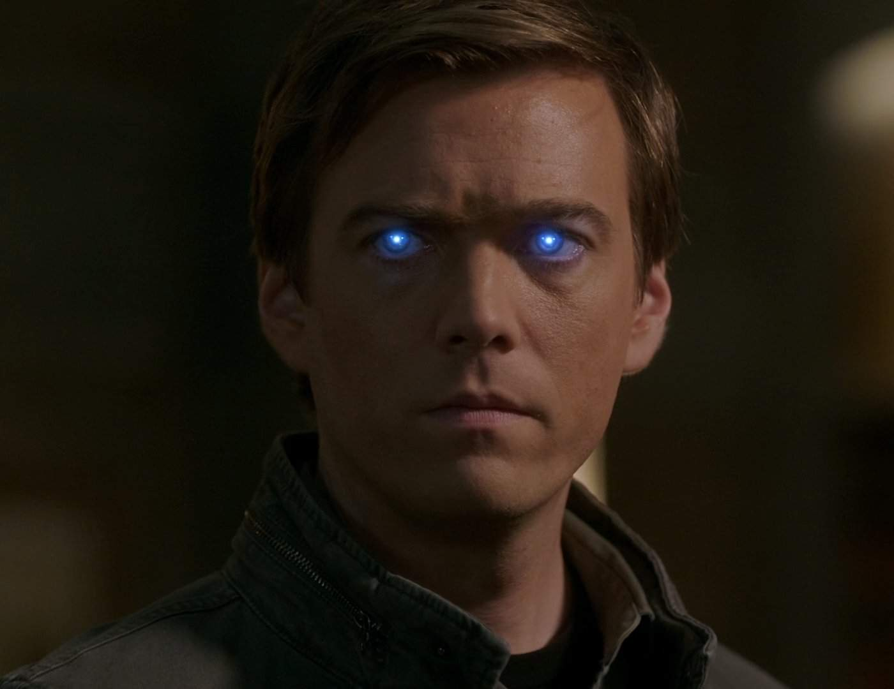
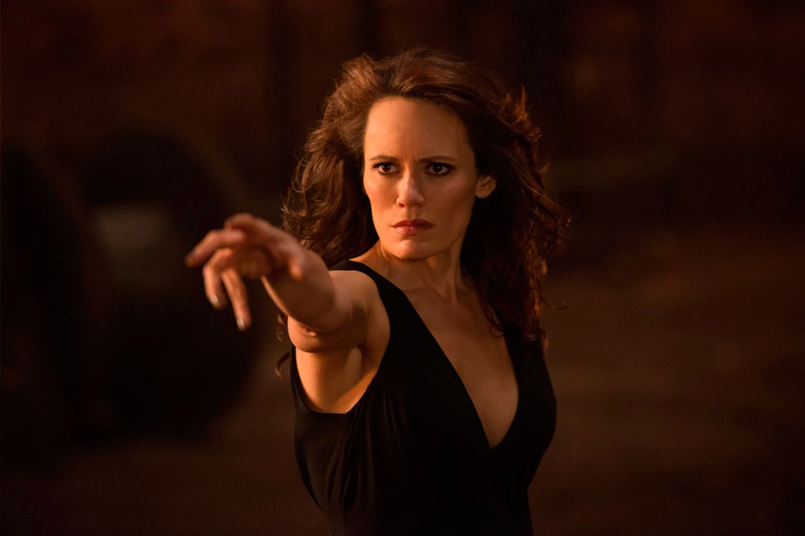
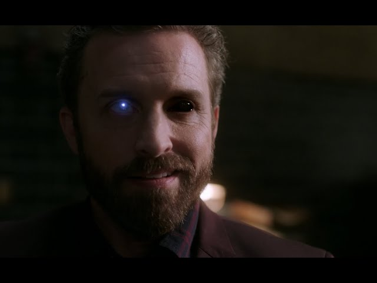
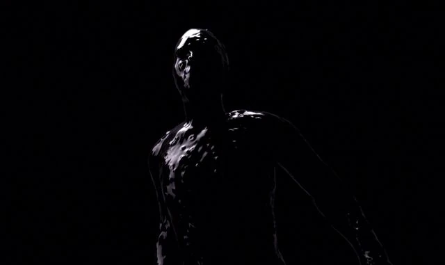

Supernatural: veja os personagens mais poderosos que cruzaram o caminho dos irmãos Winchester!

A jornada dos irmãos Winchester começou em 1983, quando sua mãe, Mary, foi assassinada por um demônio. Esse evento levou seu pai, John, a mergulhar no mundo sobrenatural e a treinar Sam e Dean como caçadores de monstros. Anos depois, Sam, que havia deixado essa vida para estudar, é puxado de volta quando seu irmão Dean aparece dizendo que seu pai desapareceu. Juntos, eles começam a caçar criaturas sobrenaturais, em busca de vingança pelo que aconteceu com sua familia.
10º - Dean Winchester com a Marca de Caim

Dean Winchester sempre foi um caçador habilidoso, mas quando ele adquiriu a Marca de Caim, seu poder foi amplificado a níveis sobrenaturais. A Marca lhe concedeu força aumentada, uma resistência incrível e o desejo incontrolável de matar, transformando Dean em uma das entidades mais temíveis da série.
9º - Rowena MacLeod

Rowena, a poderosa bruxa e mãe de Crowley, acumulou um vasto conhecimento de feitiços ao longo dos séculos, tornando-se uma das bruxas mais poderosas da história. Sua habilidade de manipular magia negra, ressuscitar dos mortos e até mesmo desafiar entidades como Lúcifer a coloca no ranking dos mais poderosos.
8º - Jack Kline
.png)
Filho de Lúcifer, Jack é um nefilim com poderes imensuráveis. Embora seu poder oscile ao longo da série, em seu auge, ele mostrou ser capaz de manipular realidades, ressuscitar mortos e até mesmo confrontar seres cósmicos. Sua existência é uma ameaça tanto para anjos quanto para demônios.
7º - Castiel com as almas do Purgatório

O anjo Castiel sempre foi um personagem forte, mas ao absorver as almas do Purgatório, ele se tornou praticamente um deus. Nesse estado, Castiel possuía poder suficiente para remodelar a realidade, enfrentar arcanjos e desafiar a própria Morte. No entanto, esse poder também quase o destruiu.
6º - Morte

Morte, um dos quatro Cavaleiros do Apocalipse, é uma entidade antiga e incrivelmente poderosa. Ele possui o poder de acabar com qualquer vida, incluindo seres imortais. A Morte também é conhecida por sua sabedoria e neutralidade, preferindo manter o equilíbrio do universo ao invés de tomar lados.
5º - Lúcifer

Lúcifer é um arcanjo extremamente poderoso, sua rebeldia contra Deus o levou a ser expulso do Céu, mas seu poder permaneceu intacto. Lúcifer é capaz de manipular a realidade, controlar legiões de demônios e enfrentar outros seres poderosos como os arcanjos e a própria Morte.
4º - Miguel

Outro arcanjo extremamente poderoso, Miguel é conhecido por sua lealdade a Deus e seu incrível poder. Em várias realidades, Miguel se posicionou como o líder das forças celestiais, capaz de destruir cidades inteiras e enfrentar Lúcifer em combate direto. Sua habilidade de manipular o tempo e o espaço o torna um dos seres mais formidáveis da série.
3º - A Escuridão (Amara)

Amara, também conhecida como A Escuridão, é a irmã de Deus e uma das entidades mais antigas e poderosas do universo. Ela representa o oposto da criação, e sua força é incomensurável. Amara demonstrou ser capaz de enfrentar e derrotar Deus, consumir almas e desfazer a própria existência.
2º - Deus (Chuck)

Chuck, inicialmente apresentado como um escritor profético, mas mais tarde é revelado ser Deus, o criador de todo o universo. Extremamente poderoso, ele pode criar e destruir realidades e controlar o destino de todos. Embora pareça benevolente no início, Chuck revela-se caprichoso e cruel, especialmente nas temporadas finais, onde se torna um antagonista que manipula a vida dos personagens para seu próprio entretenimento.
1º - O Vazio

O Vazio é uma entidade primordial que existe fora da criação, em uma dimensão de escuridão absoluta. Ele governa o descanso eterno de todos os seres celestiais e demoníacos, e sua vontade é inquestionável dentro de seu domínio. Quando desperto, o Vazio é uma força de destruição sem paralelo, capaz de consumir até mesmo entidades como Deus e Amara.